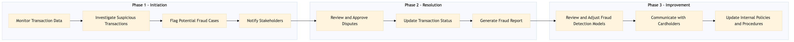

This process document outlines the steps for detecting and resolving payment fraud within the TMC Expense and Payments domain, focusing on corporate payments and settlements.
| Trigger | Detection of suspicious activity in transaction data or receipt of a dispute from a cardholder. |
| Outcome | Successful identification and resolution of fraudulent transactions with minimal impact on legitimate business operations. |
| Systems | AWS SageMaker Snowflake Kafka Salesforce Tableau Concur T2 Concur Expense S/4HANA International SOS Cvent Amex Corporate Card VCN Analytics Cloud Workday |

Click to enlarge
| Step | Name & Pain Point | Role | System | Input | Output | KPI | Flags |
|---|---|---|---|---|---|---|---|
| 1.1 | Monitor Transaction Data High volume of transactions | Fraud Analyst | AWS SageMaker, Snowflake | Transaction logs and historical data | Suspicious activity alerts | Detection rate of fraudulent transactions | ◆ Decision |
| 1.2 | Investigate Suspicious Transactions Complex transaction patterns | Fraud Analyst | Snowflake, Kafka | Suspicious activity alerts | Investigation report | Time to investigate suspicious transactions | ◆ Decision |
| 1.3 | Flag Potential Fraud Cases False positives/negatives | Fraud Analyst | Snowflake, Kafka | Investigation report | Flagged transactions | Accuracy of fraud detection | ◆ Decision |
| 1.4 | Notify Stakeholders Communication delays | Fraud Analyst, TMC Administrator | Salesforce, Email | Flagged transactions | Notification to stakeholders | Response time to flagged transactions | ◆ Decision |
| 1.5 | Review and Approve Disputes Complex dispute resolution | TMC Administrator, Finance Team | Concur T2, S/4HANA | Dispute reports | Approval or rejection of disputes | Resolution time for disputes | ◆ Decision |
| 1.6 | Update Transaction Status Data consistency issues | TMC Administrator, Finance Team | Concur T2, S/4HANA | Approval or rejection of disputes | Updated transaction status | Accuracy of transaction updates | ◆ Decision |
| 1.7 | Generate Fraud Report Data visualization challenges | Fraud Analyst, Finance Team | Tableau, Analytics Cloud | Transaction data and dispute resolution outcomes | Fraud report | Timeliness of fraud reports | ◆ Decision |
| 1.8 | Review and Adjust Fraud Detection Models Model overfitting/underfitting | Data Scientist, Fraud Analyst | AWS SageMaker, Snowflake | Fraud report | Updated fraud detection models | Improvement in fraud detection accuracy | ◆ Decision |
| 1.9 | Communicate with Cardholders Handling sensitive customer information | Customer Support, TMC Administrator | Salesforce, Email | Fraud resolution outcomes | Communication to cardholders | Customer satisfaction with dispute resolution process | ◆ Decision |
| 1.10 | Update Internal Policies and Procedures Policy implementation challenges | TMC Administrator, Compliance Officer | Workday, SharePoint | Fraud report and resolution outcomes | Updated policies and procedures | Alignment of internal policies with fraud prevention best practices | ◆ Decision |